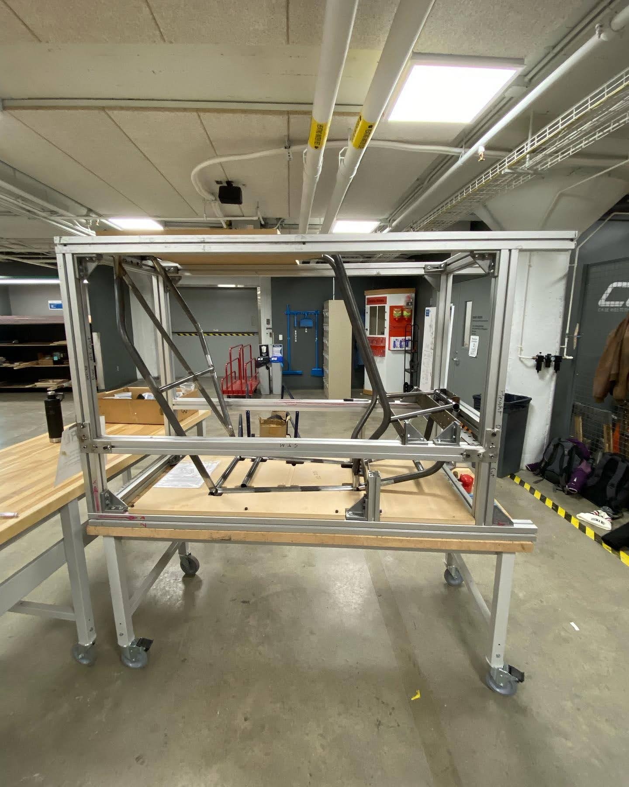
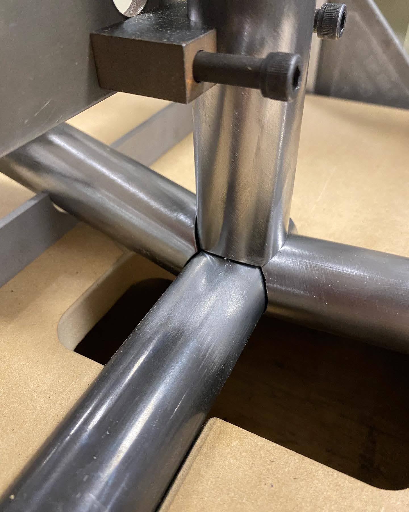
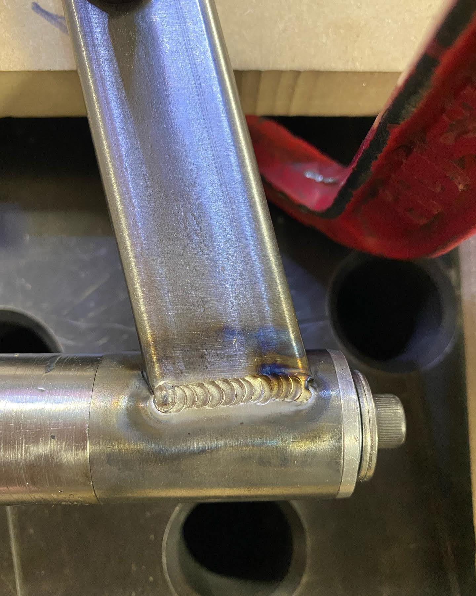

I designed welding fixturing for the 2022 & 2023 CWRU Motorsports Baja SAE cars which improved tube accuracy and decreased fixturing time considerably. I also TIG welded more than 50% of the 2022 car and 95% of the 2023 vehicle, both made from 4130 chromoly steel.
The fixturing design for 2022 & 2023 used a 3 part process. First the roll hoop was welded on a flat table, next the roll hoop was fixtured in an aluminum extrusion cage to weld the front compartment and rear bracing elements, and finally the tabs were welded using base MDF plate. The cage provided a modular and cost effective fixturing solution that was also extremely portable.
The cage uses CNC routed MDF sheets that allow tubes to sit in the proper location. MDF provided a cheap solution to fixture all of our tubes without the need for a heavy and expensive welding table.
